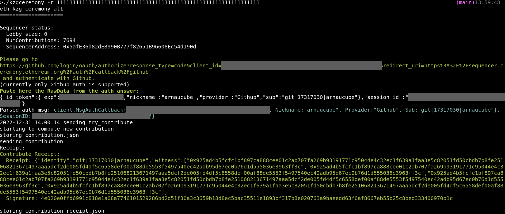

2023-01-02
In the following notes we go over the ideas behind the Powers of Tau ceremony, how participants contribute and how the contributions are verified.
The powers of tau are used in schemes such as KZG Commitments, and by consequence in the Plonk-KZG and in Verkle Trees use cases, which the later ones are in the Ethereum roadmap, but probably the ceremony output will be used in many other applications. The ceremony is named also as Trusted Setup Ceremony, and SRS (Structured Reference String) in Plonk and Sonic papers.
Specifically these notes focus on the powers of tau ceremony that is being prepared in Ethereum. For learning about the specifics of the powers of tau reasoning, I’ve used the following two documents:
Additionally, this article by Vitalik Buterin explains the ideas behind trusted setups.
The contents of these notes are distributed as follows:
The main idea
Preliminaries
Participant contribution
Proof of correct computation
Contribution verification
Full flow
Conclusions
Across these notes some snippets of Sage code are provided, the full Sage code can be found here, and also a full implementation in Go which also contains a CLI to participate in the upcomming Ethereum KZG-Ceremony.
The main idea is that we want to compute \(\tau^0, \tau^1, \tau^2, \ldots, \tau^{n-1}\), where \(\tau\) should be unknown. In order to achieve this, we use some technics to combine different \(\tau\)s from different contributors, in a way where we obtain the powers of a tau which is a combination of the different secret taus (\(\tau_{p_i}\)) of the different participants.
The \(\tau_{p_i}\) should be secret for each participant, furthermore, it should be generated from some source of randomness and destroyed at the end.
As we’ve mentioned, we want to come up with the powers of tau where tau is a combination of the taus from all the participants, in a way where as long as there is at least one honest participant, which does not share their part of the final tau, the combined-tau can not be recovered and the ceremony is assumed to be safe.
This is important, because if somebody has knowledge of the tau value, could generate fake proofs. As an example this article by Kobi Gurkan shows how fake BCTV14a proofs can be generated if tau is known.
This is relevant in the context of KZG Commitments, specially in the roadmap of Ethereum. Ethereum will run the Ceremony which will be used at least in EIP-4844. That’s why EF’s is encouraging people to participate in various ways, as the Ceremony is considered safe as long as there is at least one honest participant, with the idea that if you participate, assuming that you consider yourself honest, you can consider the Ceremony safe.
The output of the ceremony will be used in the Ethereum VerkleTrees, which uses KZG Commitments, but also it will be useful for Plonk-KZG proofs.
So the best way to trust the output of the ceremony is by becoming a participant yourself!, Furhermore, by participating with your own code ^^
Pairing
We will try to focus only in the concepts that we strictly need for the implementation, so we will treat Pairings as a black box with some simplified properties.
For our use case, we use asymmetric bilinear pairings. We can see an asymmetric bilinear pairing as a function that maps an element from the group \(\mathbb{G_1}\) and another one from \(\mathbb{G_2}\) into an el element of the group \(\mathbb{G_T}\).
\[e: \mathbb{G_1} \times \mathbb{G_2} \longrightarrow \mathbb{G_T}\]
For our use case, we’ll focus only on one property, bilinearity.
Let \(a, b \in \mathbb{F_q}\), \(\mathbb{G}_1 = \langle G \rangle\) and \(\mathbb{G}_2 = \langle H \rangle~\) (In other words, \(G\) is the generator of \(\mathbb{G}_1\), and \(H\) is the generator of \(\mathbb{G}_2\)).
Then, the bilinearity property tells us that
\[e(a \cdot G,~b \cdot H) = e((a \cdot b) \cdot G,~H) = e(G,~(a \cdot b) \cdot H)\]
For better readability, we will use the following notation to represent the scalar point multiplication:
\[[x]_1 = x \cdot G \in \mathbb{G}_1\newline [x]_2 = x \cdot H \in \mathbb{G}_2\]
So, our previous bilinearity example would look like
\[e([a]_1, [b]_2) = e([a \cdot b]_1, [1]_2) = e([1]_1, [a \cdot b]_2)\]
In our practical use case, we use the BLS12-381 pairing, where \(\mathbb{G}_1, \mathbb{G}_2\) are elliptic curve groups, thus the points \(G, H\) are elliptic curve points.
Code
For the code examples we’ll use SageMath, but the code would look quite similar in Python, and the same logic can be implemented in any language.
In the context of SRS (Structured Reference String), the powers of tau consist of an array containing the scalar multiplication of the generator point by each power of tau, eg. \(\tau^0 \cdot G,~\tau^1 \cdot G,~\tau^2 \cdot G,~\tau^3 \cdot G \ldots\)
For our case, we’ll generate \(n\) powers of tau on \(\mathbb{G}_1\), and \(m\) on \(\mathbb{G}_2\). We will denote the combination of both \(\mathbb{G}_1\) and \(\mathbb{G}_2\) powers of tau by SRS.
Each participant will obtain the previous-participant generated SRS, which is formed by
\[\{ [\tau^0]_1, [\tau^1]_1, [\tau^2]_2, \ldots, [\tau^{n-1}]_1 \},\\ \{ [\tau^0]_2, [\tau^1]_2, [\tau^2]_2, \ldots, [\tau^{m-1}]_2 \}\]
for simplicity, we will represent it as
\[\{~[~\tau^i]_1~\}^{n-1}_{i=0},~\{~[~\tau^i]_2~\}^{m-1}_{j=0}\]
Each participant generates their secret random tau \(\tau_p\), which to avoid confusion we will denote as \(p \in \mathbb{F}_r\). From it, the participant can compute \([p]_2 \in \mathbb{G}_2\).
Then the participant proceeds to update the reference string (SRS), by multiplying each element by \(p^i\):
\[\{~ p^i \cdot [~ \tau^i]_1~\}^{n-1}_{i=0},~\{~ p^i \cdot [~\tau^i]_2~\}^{m-1}_{j=0}\]
which, by the properties of scalar multiplication of a point, is equivalent to
\[\{~ [~ (p \cdot \tau)^i]_1~\}^{n-1}_{i=0},~\{~ [~ (p \cdot \tau)^i]_2~\}^{m-1}_{j=0}\]
and we denote \(p \cdot \tau\) as \(\tau'\), so we can write the previous expression as
\[\{~[~\tau'^i]_1~\}^{n-1}_{i=0},~\{~[~\tau'^i]_2~\}^{m-1}_{j=0}\]
which is
\[\{ [(\tau \cdot p)^0]_1, [(\tau \cdot p)^1]_1, [(\tau \cdot p)^2]_2, \ldots, [(\tau \cdot p)^{n-1}]_1 \},\\ \{ [(\tau \cdot p)^0]_2, [(\tau \cdot p)^1]_2, [(\tau \cdot p)^2]_2, \ldots, [(\tau \cdot p)^{m-1}]_2 \}\]
Notice that the contributor does not know the previous \(\tau\), but can obtain \((\tau \cdot p)^i\).
We can express the previous logic as follows:
def compute_contribution(new_tau, prev_srs):
g1s = [None] * len(prev_srs[0])
g2s = [None] * len(prev_srs[1])
srs = [g1s, g2s]
Q = e.r
# compute [τ'⁰]₁, [τ'¹]₁, [τ'²]₁, ..., [τ'ⁿ⁻¹]₁, where n = len(prev_srs.G1s)
for i in range(0, len(prev_srs[0])):
srs[0][i] = (new_tau^i) * prev_srs[0][i]
# compute [τ'⁰]₂, [τ'¹]₂, [τ'²]₂, ..., [τ'ⁿ⁻¹]₂, where n = len(prev_srs.G2s)
for i in range(0, len(prev_srs[1])):
srs[1][i] = (new_tau^i) * prev_srs[1][i]
return srs
The participant will compute the proof, which consists of
\[\pi = ([\tau']_1,~[p]_2)\]
which is equivalent to \(\pi = (\tau' \cdot G,~p \cdot H) = ((p \cdot \tau) \cdot G,~p \cdot H)\)
In the next section we will see how this is used to verify the contribution correct computation.
We implement this logic as follows:
def generate_proof(tau, prev_srs, new_srs):
# g_1^{tau'} = g_1^{p * tau} = SRS_G1s[1] * p
g1_ptau = prev_srs[0][1] * tau
# g_2^{p}
g2_p = tau * e.G2
return [g1_ptau, g2_p]
This is the interesting part. We want to check that the new SRS is well computed from the previous SRS together with the new tau. We want to avoid accepting contributions that do not follow the powers of tau structure, or that contain empty elements or that do not derive from the previous SRS.
Following the powers of tau structure means that
\[\tau'^{i+1} = \tau' \cdot \tau'^i ~~\forall~i \in [1, n-1]\]
And the relation between the new SRS and the previous SRS is
\[\tau' = \tau \cdot p\]
where \(\tau\) is the secret element from the previous SRS and \(p\) is the secret one from the new SRS, resulting in the combined \(\tau'\).
Now, we’re interested into how we can check these relations in the context of the SRS elements. A new contribution can be verified as follows:
Check that elements of the new SRS are non-empty, non-zero and in the correct prime order subgroups.
Get the proof (\(\pi = ([\tau']_1, [p]_2)\)), and confirm that the 1st element is equal to the element in position 1 \([\tau'^1]_1\) of the new SRS (which corresponds to \(\tau'\) powered to \(1\)).
Check that \(\tau'\) (the new SRS) is correctly related to \(\tau\) (the previous SRS).
To check this, we rely on the pairing properties and we use the proof value generated by the contributor, which consists of \([p]_2\)
\[e([\tau]_1, [p]_2) \stackrel{?}{=} e([\tau']_1, [1]_2)\]
We can see how this holds, as \(\tau' = p \cdot \tau\), and by the bilinear property of the pairing (see Preliminearies section) we have \(e(a \cdot G, b \cdot H) = e((a \cdot b) \cdot G, H)\), which in our notation is represented as
\[e([a]_1, [b]_2) = e([a \cdot b]_1, [1]_2)\]
by applying this to our case we can see that:
\[e([\tau]_1, [p]_2) = e([\tau \cdot p]_1, [1]_2) = e([\tau']_1, [1]_2)\]
Check if the new SRS follows the powers of tau structure:
\[e([\tau'^i]_1, [\tau']_2) \stackrel{?}{=} e([\tau'^{i+1}]_1, [1]_2) ~~ \forall ~i \in [1, n-1]\]
\[e([\tau']_1, [\tau'^j]_2) \stackrel{?}{=} e([1]_1, [\tau'^{j+1}]_2) ~~ \forall ~i \in [1, m-1]\]
Which, again, by the bilinarity property, we can see that
\[e([\tau'^i]_1, [\tau']_2) = e([\tau'^{i+1}]_1, [1]_2)\]
is enforcing that \(\tau'^i \cdot \tau'^1 = \tau'^{i+1}\).
And the same for
\[e([\tau']_1, [\tau'^j]_2) = e([1]_1, [\tau'^{j+1}]_2)\]
which checks that \(\tau'^1 \cdot \tau'^j = \tau'^{j+1}\).
With this check, we’re ensuring that each power of tau of the SRS is consistent with the previous one.
The complete verification function would look like
def verify(prev_srs, new_srs, proof):
# 1. check that elements of the newSRS are valid points
for i in range(0, len(new_srs[0])-1):
assert new_srs[0][i] != None
assert new_srs[0][i] != e.E1(0)
assert new_srs[0][i] in e.E1
for i in range(0, len(new_srs[1])-1):
assert new_srs[1][i] != None
assert new_srs[1][i] != e.E1(0)
assert new_srs[1][i] in e.E2
# 2. check proof.G1PTau == newSRS.G1Powers[1]
assert proof[0] == new_srs[0][1]
# 3. check newSRS.G1s[1] (g₁^τ'), is correctly related to prev_srs.G1s[1] (g₁^τ)
# e([τ]₁, [p]₂) == e([τ']₁, [1]₂)
assert e.pair(prev_srs[0][1], proof[1]) == e.pair(new_srs[0][1], e.G2)
# 4. check newSRS following the powers of tau structure
# i) e([τ'ⁱ]₁, [τ']₂) == e([τ'ⁱ⁺¹]₁, [1]₂), for i ∈ [1, n−1]
for i in range(0, len(new_srs[0])-1):
assert e.pair(new_srs[0][i], new_srs[1][1]) == e.pair(new_srs[0][i+1], e.G2)
# ii) e([τ']₁, [τ'ʲ]₂) == e([1]₁, [τ'ʲ⁺¹]₂), for j ∈ [1, m−1]
for i in range(0, len(new_srs[1])-1):
assert e.pair(new_srs[0][1], new_srs[1][i]) == e.pair(e.G1, new_srs[1][i+1])
Now that we have the three methods (compute_contribution, generate_proof, verify), it’s a matter of using them.
First let’s add a couple of helpers to our code:
# here we import the BLS12-381 pairing machinery
load("bls12-381.sage") # file from https://github.com/arnaucube/math/blob/master/bls12-381.sage
e = Pairing()
# this method generates a SRS filled by the generator points of G1 & G2
def new_empty_SRS(nG1, nG2):
g1s = [None] * nG1
g2s = [None] * nG2
for i in range(0, nG1):
g1s[i] = e.G1
for i in range(0, nG2):
g2s[i] = e.G2
return [g1s, g2s]
Let’s do the flow:
# generate a fake previous-SRS
(prev_srs) = new_empty_SRS(5, 3)
# set a random value to be used for our tau
random = 12345 # this would be a random value
tau = e.F1(random)
# compute our contribution, from the previous SRS and our tau
new_srs = compute_contribution(tau, prev_srs)
# generate a proof of correct computation of our contribution
proof = generate_proof(tau, prev_srs, new_srs)
# verify the proof for the given prev_srs and the new_srs
verify(prev_srs, new_srs, proof)
As we’ve seen, we can prove and verify the correct computation of the new SRS with few operations.
From here the next thing would be to implement the interaction with the Sequencer, in order to authenticate the participant, fetch the previous SRS, and send the new SRS and proof.
You can find the Sage example that we’ve been using here, and a full Go implementation here: https://github.com/arnaucube/eth-kzg-ceremony-alt (which uses Kilic’s BLS12-381 implementation, and includes also the interaction with the Sequencer and a CLI).
There is also the EF’s rust implementation small-powers-of-tau which has been audited. The same logic can be implemented in the language of your choice.
 Screenshot of the eth-kzg-ceremony-alt CLI after contributing to the testnet ceremony.
Another interesting piece is the randomness generation. In our example, for simplicity, tau was hardcoded in the code, but in the real world case we would use some source of randomness to generate our secret value. Here you can get as creative as you can, and probably we will see some cool approaches for the Ethereum-KZG-Ceremony.
This ceremony output is quite important, as it will be used in many applications once available. It will be used in the Ethereum protocol for the KZG Commitments on EIP-4844, but also on many other applications (some of them unrelated to Ethereum!). For example, any (up to the degree upperbound) Plonk-KZG deployment could reuse this ceremony to avoid needing to compute their own. So it’s important to gather a notable amount of participants in the ceremony, and probably participate to it by yourself! (as if you’re contributing you know that at least there has been one honest contribution (you)).
You can find more info on the Ethereum’s KZG Ceremony here: https://ceremony.ethereum.org (which includes also a nice contributor webapp to participate from the browser).